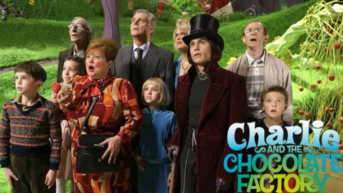
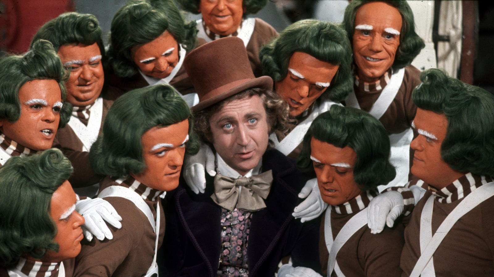

Willy Wonka Trilogy
Overview:
Charlie and The Chocolate Factory
In the first book of the trilogy, Charlie and the Chocolate Factory, we meet Charlie Bucket, a poor but kind-hearted boy who wins a coveted golden ticket to tour the most extraordinary chocolate factory in the world, owned by the reclusive and eccentric Willy Wonka. Alongside four other children, each representing a different vice, Charlie embarks on a thrilling adventure through the fantastical factory, where the strange and magical elements of Wonka’s creations challenge the very essence of human nature. The story celebrates kindness, humility, and the rewards of selflessness, all wrapped in a deliciously whimsical world of candy and invention.
Charlie and the glass elevator

In Charlie and the Great Glass Elevator, the story picks up right where the first book left off. After winning his golden ticket and touring the factory, Charlie’s adventure continues as he and his family ride the Great Glass Elevator—an incredible flying vehicle—into outer space. Along the way, they encounter alien beings, a daring rescue mission, and the return of the chocolate factory’s magical creations. Meanwhile, Willy Wonka faces the threat of the sinister Vermicious Knids, monstrous creatures that wreak havoc in space. This adventurous sequel blends science fiction with Dahl’s signature humor, exploring the boundless possibilities of human imagination.
The Films: Willy Wonka and the Chocolate Factory (1971) & Charlie and the Chocolate Factory (2005)
The world of Willy Wonka was first brought to the big screen in Willy Wonka and the Chocolate Factory (1971), starring Gene Wilder as the enigmatic Wonka. The film captured the whimsical spirit of Dahl’s novel, with memorable musical numbers and a vivid, colorful interpretation of the fantastical factory. In 2005, Tim Burton directed a more visually stylized adaptation, Charlie and the Chocolate Factory, starring Johnny Depp in the role of Wonka. Burton's version delves deeper into the character of Willy Wonka, offering a darker, more eccentric portrayal of the man behind the candy, while still staying true to the charm and fantasy of the original story.